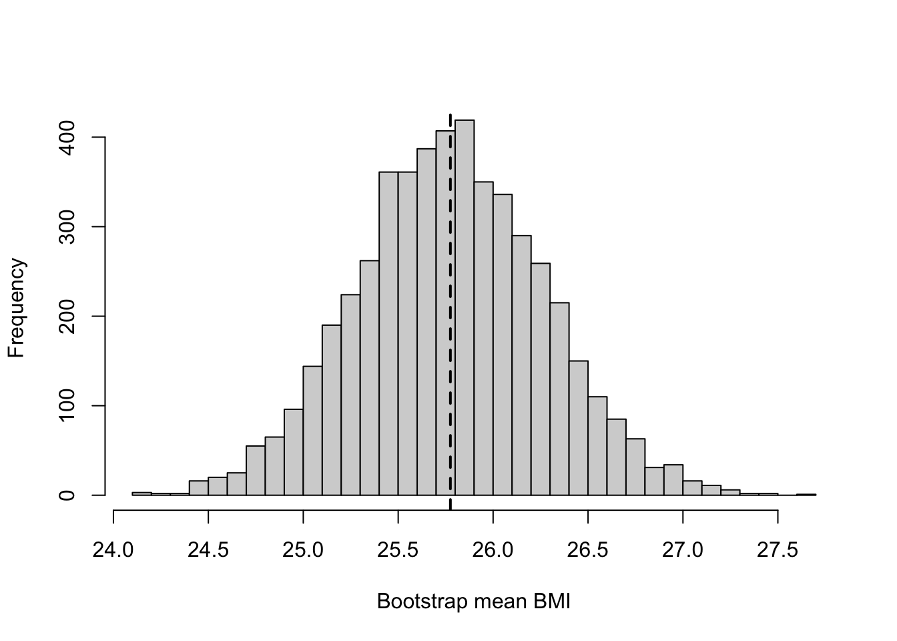

pnorm(30, mean = 25, sd = 4, lower.tail = FALSE)[1] 0.1056498Statistical Methods for Life Sciences
Exercise 6.1 (What is random?) We randomly select 10 adults from a defined population and record their BMI. The first person’s BMI is 24.5.
Let’s model as BMI as a continuous, positive measurement.
Identify:
Exercise 6.2 (What can we calculate — and what is missing?) Suppose 50% of adults in our hypothetical population have a BMI above 25.
For an adult randomly selected from this population:
By the complement rule:
\[ P(X\leq25)=1-P(X>25)=1-0.50=0.50. \]
We cannot calculate \(P(X>30)\) exactly from this information.
Because \(\{X>30\}\subseteq\{X>25\}\), we know only that:
\[ 0\leq P(X>30)\leq0.50. \]
Exercise 6.3 (A probability model for BMI) In the previous exercise, knowing only that 50% of adults have a BMI above 25 was not enough to calculate the probability of a BMI above 30.
Suppose we now use the following probability model for BMI in our hypothetical population:
\[ X \sim N(25,4^2). \]
For one randomly selected adult, calculate in R:
The model tells us that
\[ \mu=25, \qquad \sigma=4. \]
For a BMI above 30:
\[ P(X>30)=1-F(30). \]
In R:
pnorm(30, mean = 25, sd = 4, lower.tail = FALSE)[1] 0.1056498For a BMI between 20 and 30:
\[ P(20<X<30)=F(30)-F(20). \]
pnorm(30, mean = 25, sd = 4) -
pnorm(20, mean = 25, sd = 4)[1] 0.7887005To locate a BMI of 30 relative to the mean, we standardise:
\[ z = \frac{30-25}{4} = 1.25. \]
A BMI of 30 is therefore 1.25 standard deviations above the mean.
We can also calculate the upper-tail probability using the standard normal distribution:
z <- (30 - 25) / 4
pnorm(z, lower.tail = FALSE)[1] 0.1056498For the 95th percentile, we want the value \(x_{0.95}\) such that
\[ P(X \leq x_{0.95}) = 0.95. \]
On the standard normal scale,
\[ z_{0.95} = \Phi^{-1}(0.95) \approx 1.645. \]
In R:
qnorm(0.95)[1] 1.644854We then transform back to the BMI scale:
\[ x_{0.95} = \mu+\sigma z_{0.95} = 25+4(1.645) \approx31.6. \]
So approximately 95% of adults have a BMI below 31.6 under this model.
We can also calculate the cutoff directly in R:
qnorm(0.95, mean = 25, sd = 4)[1] 31.57941Exercise 6.4 (A discrete probability model) Suppose that 15% of bacterial isolates from a particular population are resistant to an antibiotic.
We randomly and independently select 30 isolates and let \(K\) be the number that are resistant.
For each isolate, resistance is a binary outcome:
\[ Y = \begin{cases} 1, & \text{resistant},\\ 0, & \text{not resistant}. \end{cases} \]
with
\[ P(Y=1)=p=0.15. \]
Thus,
\[ Y \sim \operatorname{Bernoulli}(0.15). \] The number of resistant isolates among 30 independent isolates is
\[ K=\sum_{i=1}^{30}Y_i, \]
so
\[ K\sim\operatorname{Bin}(30,0.15). \]
The possible values are
\[ K\in\{0,1,2,\ldots,30\}. \] c)
The expected number of resistant isolates is
\[ E[K] = np = 30\times0.15 = 4.5. \]
For exactly four resistant isolates,
\[ P(K=4) = \binom{30}{4} (0.15)^4(0.85)^{26}. \]
In R:
dbinom(4, size = 30, prob = 0.15)[1] 0.2028089For four or more resistant isolates,
\[ P(K\geq4) = 1-P(K\leq3). \]
In R:
1 - pbinom(3, size = 30, prob = 0.15, lower.tail = TRUE)[1] 0.6783401# or
pbinom(3, size = 30, prob = 0.15, lower.tail = FALSE)[1] 0.6783401We can simulate repeated samples from the binomial model:
set.seed(2026)
K_sim <- rbinom(
10000,
size = 30,
prob = 0.15
)The simulated probability of observing four or more resistant isolates is:
mean(K_sim >= 4)[1] 0.6756This should be close to the exact probability obtained above:
pbinom(
3,
size = 30,
prob = 0.15,
lower.tail = FALSE
)[1] 0.6783401We can simulate repeated samples from the binomial model:
set.seed(2026)
K_sim <- rbinom(
10000,
size = 30,
prob = 0.15
)The simulated probability of observing four or more resistant isolates is:
mean(K_sim >= 4)[1] 0.6756This should be close to the exact probability:
pbinom(
3,
size = 30,
prob = 0.15,
lower.tail = FALSE
)[1] 0.6783401The simulated value will not be exactly the same because it is based on a finite number of random simulations. With many simulations, the estimate tends to get closer to the model probability.
Exercise 6.5 (How precise is the estimated mean?) A random sample of 36 adults has
\[ \bar{x}=26.2 \]
and sample standard deviation
\[ s=3.6. \]
Suppose we want to compare the observed mean BMI with a value of 25.
Because the population SD, \(\sigma\), is unknown, we estimate the standard error using the sample SD:
\[ \widehat{\operatorname{SE}}(\bar X) = \frac{s}{\sqrt n}. \]
For \(n=36\) and \(s=3.6\),
\[ \widehat{\operatorname{SE}}(\bar X) = \frac{3.6}{\sqrt{36}} = \frac{3.6}{6} = 0.6. \]
The observed mean is
\[ 26.2-25=1.2 \]
BMI units above 25.
In estimated standard error units,
\[ T = \frac{\bar{x}-25} {s/\sqrt n} = \frac{26.2-25}{0.6} = 2. \]
So the observed mean is 2 estimated standard errors above 25.
Because \(\sigma\) is unknown and has been replaced by the sample SD, \(s\), the appropriate reference distribution is a t-distribution.
\[ df=n-1=35. \]
Therefore,
\[ T\sim t_{35} \]
under the corresponding normal population model.
If \(n=100\) and \(s\approx3.6\),
\[ \widehat{\operatorname{SE}}(\bar X) = \frac{3.6}{\sqrt{100}} = 0.36. \]
The larger sample therefore gives a smaller standard error and a more precise estimate of the population mean.
Exercise 6.6 (Estimating uncertainty with the bootstrap) Suppose we observe BMI in a sample of 20 adults:
bmi <- c(
21.8, 22.4, 23.1, 23.7, 24.0,
24.3, 24.8, 25.0, 25.2, 25.5,
25.9, 26.1, 26.4, 26.8, 27.1,
27.5, 28.0, 28.6, 29.2, 30.1
)bmi with replacement. Calculate its mean.mean(bmi)[1] 25.775set.seed(2026)
bmi_boot <- sample(
bmi,
size = length(bmi),
replace = TRUE
)
mean(bmi_boot)[1] 25.66The bootstrap sample contains the same number of observations as the original sample, but some observations may appear more than once and others may not appear at all.
set.seed(2026)
bootstrap_means <- replicate(
5000,
mean(
sample(
bmi,
size = length(bmi),
replace = TRUE
)
)
)Each value in bootstrap_means is the mean of one bootstrap sample.
hist(
bootstrap_means,
breaks = 30,
main = "",
xlab = "Bootstrap mean BMI"
)
abline(
v = mean(bmi),
lty = 2,
lwd = 2
)
The bootstrap distribution should be centred close to the observed sample mean.
mean(bootstrap_means > 26)[1] 0.3222This estimates
\[ P(\bar{X}^*>26), \]
where \(\bar{X}^*\) denotes a bootstrap sample mean.
sd(bootstrap_means)[1] 0.4961505Thus,
\[ \widehat{\operatorname{SE}}_{\text{bootstrap}} = \operatorname{SD}(\bar{X}^*). \]
\[ \widehat{\operatorname{SE}}(\bar X) = \frac{s}{\sqrt n}. \]
In R:
sd(bmi) / sqrt(length(bmi))[1] 0.5015699The two estimates should be similar.
The bootstrap uses repeated resampling of the observed data to construct an empirical distribution of the statistic. This distribution can be used to study its variability and, when appropriate, estimate probabilities under the resampling scheme.